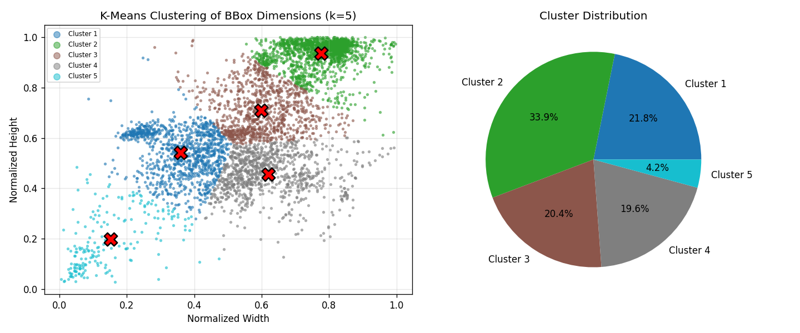
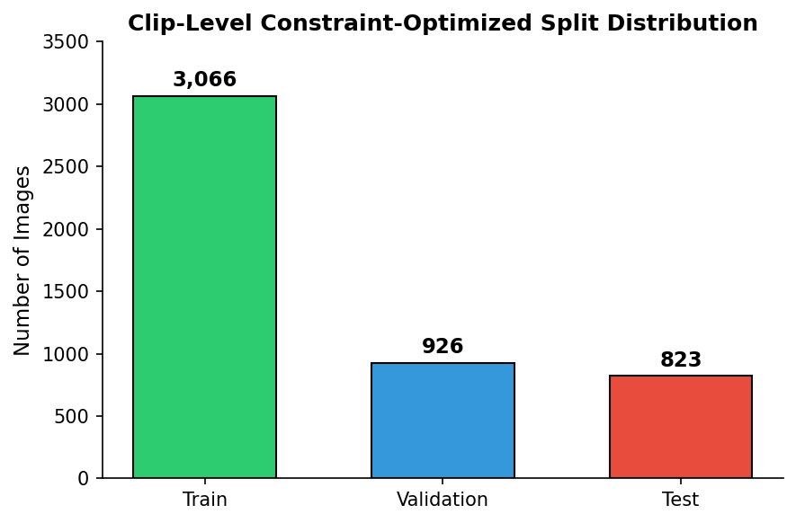

Wildfires destroy approximately 4.5 million square kilometers of land each year, yet most detection systems identify fires only after flames become visible—when the window for early containment has already narrowed. Smoke precedes flame in nearly every wildfire ignition scenario, but computer vision research has largely treated smoke and fire as a jointly detected pair, training and evaluating detectors on the same distributions. This paper asks a question that, to our knowledge, has not been tested on the Boreal Forest Fire 2025 dataset: whether object detection models trained exclusively on smoke bounding boxes can generalize to fire detection without exposure to a single fire label. Four architectures spanning three detection paradigms—YOLO11n (one-stage, anchor-free CNN), Faster R-CNN (two-stage RPN with domain-specific anchors), RT-DETR (hybrid CNN-transformer), and DINO (end-to-end transformer with contrastive denoising)—are trained on 3,066 smoke-annotated images from Finnish boreal drone footage and evaluated zero-shot on a held-out fire dataset. The training pipeline incorporates a constraint-optimized, clip-level data split that eliminates temporal leakage across sequential video frames, a problem unaddressed in all twelve papers surveyed. A seven-part data cleaning protocol with full audit trail identified 4,139 anomalies while maintaining strict zero-imputation integrity for ground truth annotations. Domain-specific anchor clusters were computed from 4,862 smoke bounding boxes and injected into the Faster R-CNN region proposal network for direct comparison against default COCO anchors. This work establishes the first multi-architecture benchmark on the Boreal 2025 dataset and provides the first controlled experiment isolating smoke-to-fire visual prototype transfer in object detection.
The boreal forest biome accounts for roughly one-third of the world’s forested area, and its remote geography means that fires can burn for days before detection . Satellite-based thermal anomaly detection offers coarse coverage but suffers from revisit latency; a fire that ignites between satellite passes can spread beyond initial containment capacity before the next overpass. Ground-level camera networks and watchtower observations provide continuous coverage but require human operators to remain vigilant across hours of largely static forest imagery.
UAVs carrying lightweight cameras and onboard inference hardware offer a middle path: persistent aerial monitoring with the range of a satellite and the responsiveness of a human observer. The practical challenge, however, is not simply detecting a fire—it is detecting the precursor. Smoke is visible well before flames, sometimes at distances exceeding ten kilometers . A detector that triggers on the first wisp of smoke buys responders minutes that a flame-only detector never sees.
Most published work on wildfire detection trains models on fire, on smoke, or on both simultaneously, then evaluates on held-out portions of the same dataset . This answers the question “can a model learn to see smoke?” but dodges a more fundamental one: “can a model trained on smoke see fire?” The distinction matters because in deployment, the detector must recognize flames it was never shown. If smoke-trained features do not transfer, an early-warning system that waits until flames are visible is not early at all.

The Boreal Forest Fire dataset provides a uniquely suitable testbed for this question. Collected by DJI Phantom 4 UAVs during four controlled burns in Finland during the summer of 2022, its 4,954 images capture boreal smoke under authentic Nordic conditions—low-angle sunlight, mirroring lake surfaces, dense conifer canopies, and rapidly shifting cloud cover that produces visual mimics indistinguishable from diffuse smoke to a naive detector. No multi-architecture benchmark has been published against this dataset, and the twelve papers surveyed for this work (Table 1) each train and test within the smoke domain.
Our approach is structured around a single proposition: that the visual features a detector learns from smoke—turbulent fluid motion, semi-transparency against sky backgrounds, upward trajectory, irregular boundaries—constitute a visual prototype that partially overlaps with fire. If the proposition holds, then the degree of transfer should vary with the architectural mechanisms that extract those features. A one-stage CNN with local receptive fields may encode different aspects of smoke than a transformer with global self-attention or a two-stage detector with explicit region proposals.
To test this, we make three design choices that differentiate our work from the existing literature. First, we split the dataset at the video-clip level rather than by random frame assignment. This is not a cosmetic preference; it is the difference between measuring a model’s ability to detect smoke and measuring its ability to recognize the trees at the Evo burn site. The Boreal images are sequential frames extracted from 31 distinct UAV flights. Adjacent frames share the same forest background, the same lighting, and the same camera angle. A random split distributes frame 65 to training and frame 66 to validation, rewarding the model for recognizing static context rather than the smoke itself. Our constraint optimizer treats each flight as an indivisible unit, distributing 31 variable-sized clips across train, validation, and test while enforcing geographic diversity and penalizing distributional imbalance.
Second, we do not resize the 4,096\(\times\)2,160-pixel frames to 640\(\times\)640 during preprocessing. A 21\(\times\) downsampling factor compresses a plume occupying 1% of the frame into roughly 4\(\times\)2 pixels—below the detection floor of any backbone. Instead, we extract random 640\(\times\)640 crops during training, preserving full-resolution smoke textures while maintaining compatibility with standard detector input dimensions.
Third, we report APsmall, APmedium, and APlarge separately. On a dataset where 95.7% of annotated plumes occupy more than 10% of the image, an aggregate mAP score can conceal a model that detects every large plume and misses every small one. The small plume metric is the only one that directly measures the early-detection capability this work is designed to evaluate.
Classical computer vision approaches to smoke detection relied on handcrafted features: color histogram thresholding in HSV space , motion estimation via optical flow , and wavelet-based texture decomposition . These methods required per-camera calibration and failed under the lighting variability characteristic of boreal summer conditions, where cloud shadows and low sun angles produce rapid shifts in both color balance and contrast.
The shift to learned features began with CNN-based detectors. Yuan et al. demonstrated end-to-end smoke detection on static camera feeds; Xu et al. introduced attention-guided lightweight architectures for real-time deployment. Mukhiddinov et al. optimized YOLOv5 with brightness jitter and mosaic augmentation for UAV-collected smoke imagery. Kim and Muminov fine-tuned YOLOv7 on 6,500 UAV smoke images, reporting 86.4% AP@50—a score we treat as a within-domain baseline for our YOLO11n comparison, not a target to beat, since their model was trained and tested on the same smoke distribution. Chetoui and Akhloufi achieved 92.6% mAP@50 on a joint fire-and-smoke detection task using YOLOv8 and YOLOv7, but the joint training design makes it impossible to isolate which class drove the performance gain. Gonçalves et al. demonstrated that StyleGAN2-ADA synthetic augmentation measurably improves small-object AP for both YOLOv8 and RT-DETR-X, a finding we acknowledge as a limitation of our simpler copy-paste augmentation strategy.
Raita-Hakola et al. provided the foundational study on the Boreal data, fine-tuning YOLOv5 S/M/L with frozen backbones and progressively increasing volumes of local data. Their finding that 1,000–1,300 locally collected images sufficed for generalization is the evidence for our training set size being adequate; our 3,066 training images exceed their threshold. More critically, they demonstrated that a model trained on Californian HPWREN watchtower imagery achieved 0.93 precision on HPWREN test data but only 0.031 precision on Finnish Ruokolahti images, confirming that smoke appearance is strongly domain-dependent and that locally collected training data is not optional for this task.
Pesonen et al. published the dataset itself and a subsequent WACV study on teacher-student distillation for real-time smoke segmentation. Their WACV work used PIDNet students trained on SAM-generated pseudo-masks, achieving 25.88 FPS on a Jetson Orin NX at 63.3% mIoU, and validated the detection pipeline at a live prescribed burning event. The preprocessing choices in that study—640\(\times\)640 resolution, horizontal flip, mosaic composition, and brightness-contrast jitter—match our augmentation configuration, providing external validation of our training recipe.
| Paper | Trains on smoke only? | Tests on fire? | Temporal leakage addressed? |
|---|---|---|---|
| Kim & Muminov (2023) | Yes | No | No |
| Chetoui & Akhloufi (2024) | No | No | No |
| Gonçalves et al. (2024) | Yes | No | No |
| Yang et al. (2024) | Yes | No | No |
| Huang et al. (2025) | Yes | No | No |
| Mukhiddinov et al. (2022) | Yes | No | No |
| Zhou et al. (2025) | Yes | No | No |
| Shamta & Demir (2024) | No | No | No |
| Raita-Hakola et al. (2023) | Yes | No | No |
| Pesonen et al. (2025) WACV | Yes | No | No |
| Zhang et al. (2023) DINO | N/A | No | N/A |
| Ours | Yes | Yes | Yes |
Temporal leakage is well-documented in time-series forecasting but severely under-discussed in object detection research involving video-derived image datasets. Zhong et al. identified spatial autocorrelation as a source of inflated validation metrics in remote sensing applications. When frames from a continuous video are distributed across training and validation by random assignment, the detector learns static scene context rather than object features. To our knowledge, no published wildfire detection study—including those using the same Boreal dataset —has implemented a leakage-free split at the video-clip level. Our constraint optimizer is a methodological contribution intended to be adopted by other researchers working with drone-derived sequential imagery.
Zero-shot object detection has predominantly been advanced through language-guided models. GLIP and Grounding DINO use text prompts to guide detection of unseen classes. OWL-ViT achieves open-vocabulary detection through large-scale image-text pretraining.
Our approach is fundamentally different. We do not use language prompts, CLIP embeddings, or any text-based class specification. The detector receives smoke images with bounding boxes and must decide, without instruction, whether the visual features it learned from smoke also fire on flames. This isolates visual prototype transfer from linguistic prototype transfer. If the transfer succeeds, it is because turbulent, semi-transparent, upward-moving regions share a visual signature across the two phenomena—not because a language model has associated the words “smoke” and “fire” in its training corpus.
| Property | Value |
|---|---|
| Total images | 4,954 |
| Annotated images | 4,693 |
| Empty (background-only) images | 256 |
| Total bounding boxes | 4,862 |
| Annotation class | Smoke (class 0, single-class) |
| Annotation format | YOLO TXT (normalized) |
| Resolution | 4,096\(\times\)2,160 (4K) |
| Capture platform | DJI Phantom 4 UAV |
| Geographic locations | 4 (Evo, Heinola, Karkkila, Ruokolahti) |
| Video clips (distinct flights) | 31 |
| Collection dates | May–August 2022 |
The Boreal Forest Fire dataset was collected during four prescribed forest restoration burns conducted by the Finnish Geospatial Research Institute in the summer of 2022. A DJI Phantom 4 UAV captured RGB video at 4K resolution from altitudes of 10–200 meters above ground and distances of up to 500 meters from the burn sites. Images were extracted at approximately one frame every two seconds and manually annotated using the makesense.ai tool.
We selected this dataset for four reasons, each tied to our research question. First, its UAV perspective matches the deployment scenario—drones will carry these detectors, not ground-level CCTV cameras. A detector trained on oblique surveillance footage would encounter unfamiliar perspective distortion when deployed on a UAV, and vice versa. Second, its Nordic forest environment is categorically different from the Mediterranean scrubland and Californian chaparral that dominate existing fire datasets. Conifer canopies, mirroring lake surfaces, and low-angle summer sunlight create a visual domain that the dataset authors themselves demonstrated requires locally collected training data . Third, the annotation strategy was empirically validated: Pesonen et al. tested two approaches—large bounding boxes that enclose the entire smoke region including some background, and multiple small boxes that tightly crop only pure smoke pixels. Large annotations achieved 0.94 precision while small annotations reached only 0.24, confirming that the loose-box strategy produces more learnable features. We use the large-annotation subset exclusively. Fourth, the dataset includes 256 explicitly designated empty frames—images of clean boreal forest with no smoke present—which serve as hard negatives during training and prevent the model from learning that every image contains a detection target.
The dataset contains 31 distinct UAV flights distributed across four locations. Image counts are not uniform: Ruokolahti contributes 1,765 images from several long flights, while Evo contributes 931. This imbalance becomes a constraint during the splitting process, as we cannot sever a flight into pieces without causing temporal leakage.
Before designing any part of the training pipeline, we characterized five properties of the data that would prove to constrain or inform every subsequent decision.
Large plume dominance. Of the 4,862 bounding boxes, 95.7% occupy more than 10% of the image area. Only 1.3% (26 boxes) occupy less than 1%. A detector trained on this distribution will see large smoke plumes as the norm and may fail to trigger on the small, distant plumes that are the earliest indicators of ignition. We respond with three countermeasures: scale augmentation raised to 0.9 to reduce downsampling, mosaic probability reduced to 0.4 to preserve spatial context, and separate reporting of APsmall, APmedium, and APlarge to prevent aggregate mAP from hiding small-object failure.
Horizon constraint. The mean Y-center of all bounding boxes is 0.395, meaning smoke appears almost exclusively in the top 40% of the image. The bottom half of each frame is foreground forest that is never annotated. This reflects the physical reality that smoke rises and UAVs look horizontally or downward. We disable vertical flip augmentation (flipud = 0.0) because inverting an image would place smoke at ground level, teaching the model a physically impossible spatial prior.
Daytime illumination bias. The mean pixel intensity across sampled images is 112/255. Only 4% of images register as dark (below intensity 85). If deployed on a 24-hour monitoring schedule, a model trained on this distribution will encounter pixel statistics at dawn and dusk that it has never seen. We apply HSV jitter (hue = 0.015, saturation = 0.4, value = 0.3) to simulate varied sky colors and reduced illumination. Synthetic augmentation cannot fully compensate for absent real night data, and we document this as a limitation.
Single-box images. 99.5% of annotated images contain exactly one bounding box. A detector trained on single-object scenes never exercises its non-maximum suppression (NMS) module on real multi-object configurations. Mosaic augmentation, which composites four images into one, and copy-paste augmentation, which pastes segmented smoke regions into empty backgrounds, artificially create multi-object scenes. NMS behavior under these conditions is explicitly tested during evaluation.
Anchor cluster distribution. We applied \(k\)-means clustering (\(k=5\)) to the normalized widths and heights of all 4,862 boxes: \[\begin{equation} \text{Anchors}_5 = \begin{bmatrix} (0.15, 0.20) & (0.36, 0.54) & (0.62, 0.46) & (0.60, 0.71) & (0.78, 0.94) \end{bmatrix} \label{eq:anchors} \end{equation}\]
These clusters span normalized areas from 0.03 to 0.73, compared to COCO default anchor areas of 0.03 to 0.50. The largest smoke cluster (0.73) extends well beyond the largest COCO anchor, reflecting the dataset’s bias toward large plumes. YOLO11n and RT-DETR are anchor-free by design and cannot accept explicit anchors. DINO uses learned queries rather than static anchors. The clusters are injected exclusively into the Faster R-CNN region proposal network (RPN) via its AnchorGenerator, providing the only anchor-dependent comparison point in the study.
Object detection datasets contain errors that classification datasets do not: bounding boxes can be misplaced, malformed, or assigned to the wrong class; label files can reference images that do not exist; sequential frames can be functionally identical. For classification, a mislabeled sample adds noise to a loss function. For detection with bounding boxes, a mislabeled sample teaches the model to draw boxes where objects are not—a qualitatively different and more damaging error mode.
We adopted a strict zero-imputation policy. Unlike tabular data where missing values can be imputed via mean, median, or KNN without destroying the underlying statistical structure, a missing bounding box is not a missing value—it is missing spatial information. Imputing a bounding box would mean fabricating coordinates where no object was verified to exist. No box is synthesized, no annotation is hallucinated. Every integrity issue is resolved by either (a) listwise deletion of corrupt or unpaired files, or (b) flagging for downstream handling without modifying ground truth.
The cleaning pipeline inspects seven dimensions of data quality:
File integrity. Every JPEG is opened via PIL.Image.verify() to detect truncation or corruption. Files with zero-byte size are identified. Image-label stem pairs are cross-referenced to detect orphans.
Exact duplicates. MD5 hashes identify byte-identical files introduced during data transfer or extraction.
Statistical outliers. Bounding box area and aspect ratio are evaluated. Our initial implementation used standard IQR (Q1 \(-\) 1.5\(\times\)IQR, Q3 \(+~\)1.5\(\times\)IQR), which proved to be a mistake. The box area distribution is heavily right-skewed—95.7% of areas exceed 0.10—and IQR assumes approximate normality. Legitimate large smoke plumes were erroneously flagged as outliers. We replaced IQR with asymmetric percentile bounds, flagging only the bottom 0.5% and top 0.5% of the area distribution. This preserved large-plume data while catching genuinely anomalous boxes.
Format consistency. Every YOLO label line is validated for exactly five floating-point fields. Class IDs are enforced to 0 (smoke only). Normalized coordinates outside \([0,1]\) are handled by a two-tier rule: values within 0.02 of the boundary are clipped; values exceeding this margin indicate unrecoverable annotation errors and are flagged.
Sequential consistency. Consecutive frames are compared for box continuity. Given the mean frame-to-frame displacement of 0.041 (normalized), consecutive boxes should exhibit IoU \(>\) 0.9. Pairs with IoU \(<\) 0.5 are flagged as potential annotation jumps. Three-frame interpolation provides a second-order consistency check. Perceptual hashing (pHash, Hamming distance \(<\) 5) identifies near-duplicate frames where smoke displacement is negligible and the static scene context is functionally identical. These 2,864 detected pairs are flagged, not deleted; frame density is managed during splitting via clip-level sub-sampling.
Pixel-level quality. Laplacian variance quantifies image sharpness. Variance below 50 in a 4K image indicates motion blur, heat haze distortion, or autofocus hunting—conditions that degrade the fine texture edges distinguishing distant smoke from clouds. Local RMS contrast within each bounding box identifies annotations placed on regions so diffuse that they contain no learnable signal. These boxes are flagged for potential exclusion from training.
Audit trail. Every modification—flag, clip, or deletion—is logged to a structured CSV recording the affected image path, the issue type, the detection method, the treatment applied, and the rationale. This produces a fully reconstructable decision history.
@lr@ Outcome &
Count
Images scanned & 4,954
Total flags raised & 4,139
Images or annotations deleted & 0
Coordinate auto-corrections (marginal) & 2
Images retained & 4,954
Near-duplicate frames (pHash) & 2,864
Blurry (Laplacian variance \(<50\))
& 431
Aspect ratio outliers (percentile) & 368
Temporal box discontinuity & 255
Box count per clip deviation & 193
Bounding box area outliers & 26

The Boreal images are not independent samples. Each frame is one
member of a sequence extracted from a continuous UAV video. The filename
evoDJI_0001_frame65.jpg encodes the clip identifier
(evoDJI_0001) and the frame index (65). Frames
64, 65, and 66 share the same forest canopy, the same cloud
configuration, the same sun angle, and nearly the same smoke column
geometry. A detector shown frame 65 in training and frame 66 in
validation is not being asked to generalize to new smoke; it is being
asked whether it memorized the background of the Evo burn site.
The standard remedy—train_test_split(random_state=42)—is
precisely the wrong answer here. It distributes adjacent frames across
splits, inflating validation metrics by rewarding background recognition
rather than smoke detection. Raita-Hakola et al. used a location-based split
(training on three sites, testing on the fourth), which prevents
cross-location leakage but does not prevent within-location temporal
leakage between clips from the same site.
Our solution treats each of the 31 UAV flights as an indivisible atomic unit. The splitting problem becomes a constrained knapsack optimization over 31 variable-sized blocks:
\[\begin{equation} \min_{\mathcal{S}} \sum_{s \in \{\text{train},\text{val},\text{test}\}} \left(\frac{N_s}{N} - r_s\right)^2 + \lambda_1 \sigma_{\text{blur}} + \lambda_2 \mathbb{I}[\text{small}_s = 0] \label{eq:split_opt} \end{equation}\]
where \(N_s\) is the number of images assigned to split \(s\), \(r_s\) is the target ratio (0.70, 0.15, 0.15), \(\sigma_{\text{blur}}\) is the standard deviation of mean Laplacian variance across splits (penalizing uneven blur distribution), and \(\mathbb{I}[\text{small}_s = 0]\) is a binary penalty triggered when any split receives zero small-plume images (\(\text{area} < 0.01\)). The penalty weight \(\lambda_2 = 10.0\) is calibrated to dominate the ratio error term when small plumes are absent, forcing the optimizer to prioritize the early-detection evaluation capability over ratio precision.
The optimizer evaluated 10,000 randomized clip permutations subject to four constraints: (1) no clip identifier appears in more than one split; (2) at least one clip from each of the four geographic locations (Evo, Heinola, Karkkila, Ruokolahti) must appear in every split, ensuring that each split contains unseen camera angles and forest contexts for every location; (3) clips with more than 300 frames undergo uniform sub-sampling to prevent single long flights from dominating a split; and (4) the 256 background-only images are distributed proportionally.
| Split | Images | Ratio | Bright. | Blur | APsmall |
|---|---|---|---|---|---|
| Train | 3,066 | 63.7% | 113.9 | 2,710 | 1.5% |
| Val | 926 | 19.2% | 109.6 | 1,852 | 0.4% |
| Test | 823 | 17.1% | 109.2 | 2,750 | 1.0% |
Three near-misses during the optimization process illustrate why distribution-aware splitting is not a cosmetic exercise. In the first run, a frame cap of 100 per clip was applied to prevent oversampling. This cap was too aggressive: Ruokolahti’s largest flight, containing 1,765 frames, was decimated to 100, and the total retained count fell to 2,732—a 45% loss of training data. Raising the cap to 300 recovered 4,815 images (97.2% retention).
In the second run, the optimizer produced val and test splits containing 0.0% small-plume images. With only 26 small-plume annotations in the entire dataset, a split that excludes them from evaluation is statistically unsurprising but experimentally catastrophic: the model’s ability to detect early distant smoke cannot be measured if the evaluation set contains none. The \(\lambda_2\) penalty forced small plumes into all three splits.
In the third run, a blur standard deviation of 35% across splits placed the sharpest frames in the validation set and the blurriest in the test set, creating an evaluation bias where models appeared more accurate on validation than they were on the deployment-representative test data. The \(\sigma_{\text{blur}}\) term bounded this variance.
The split data exists in two formats to support all four training
frameworks. YOLO TXT (normalized coordinates in .txt files)
serves YOLO11n and RT-DETR via the Ultralytics library. COCO JSON
(absolute pixel coordinates in .json files with image
metadata) serves Faster R-CNN via torchvision and DINO via the
HuggingFace Transformers library. The conversion script denormalizes
YOLO coordinates against the original image dimensions—images are not
resized on disk; each framework’s DataLoader handles input scaling at
training time. The resulting COCO annotation files contain 3,022
(train), 898 (validation), and 803 (test) annotations.
Augmentations in object detection serve a purpose distinct from their role in classification. In classification, augmentation teaches invariance—a rotated cat is still a cat. In detection, augmentation teaches the model that smoke can appear small, dim, partially occluded, or embedded in haze, and must still be localized. Every augmentation parameter in our configuration traces to a specific data property identified during exploratory analysis.
| Data finding | Parameter | Rationale |
|---|---|---|
| 95.7% large plumes; model may ignore small smoke | Mosaic = 0.4 | Reduced from default 1.0. Full mosaic halves each image, compressing an already-small plume further. Keeping mosaic active but at reduced probability preserves its multi-object generalization benefit without destroying small objects. |
| 95.7% large plumes | close_mosaic = 10 | Mosaic is disabled for the final 10 epochs. The model fine-tunes on clean, un-stiched images, preventing mosaic artifacts from propagating into final weights. |
| 95.7% large plumes | Scale = 0.9 | Increased from default 0.5. The \(\times2.1\) reduction in downscaling preserves small plume features that would otherwise collapse into sub-pixel noise. |
| 99.5% single-box | copy_paste = 0.15 | Pastes smoke regions from annotated images into the 256 empty backgrounds, creating synthetic multi-object scenes that exercise the NMS module on training data. |
| Daytime bias (96%) | HSV jitter (h=0.015, s=0.4, v=0.3) | Simulates the sky color and illumination changes that occur at dawn, dusk, and under varying cloud cover. Saturation reduction simulates haze conditions that desaturate smoke at distance. |
| Horizon constraint | flipud = 0.0 | Vertical flip is disabled. Inverting an image places smoke at ground level, teaching a physically impossible spatial prior that smoke originates from the forest floor. |
| Drone platform | degrees = 5.0 | Small rotation tolerance simulates UAV gimbal drift and slight heading corrections during flight. |
Fog and motion blur augmentations, which are standard in the Albumentations library, require overriding the Ultralytics Dataset class to inject custom transforms into the augmentation pipeline. We chose not to implement this override to preserve framework compatibility and full reproducibility. The missing augmentations are documented as a limitation; native HSV jitter, scale jitter, and mosaic provide partial coverage for the environmental variation these transforms would have addressed.
We selected four architectures spanning three detection paradigms to test whether the degree of smoke-to-fire transfer depends on the underlying feature extraction mechanism.
YOLO11n (one-stage, anchor-free CNN). With 2.6 million parameters, YOLO11n is the lightest model in the comparison and the baseline for edge deployment feasibility. Its Task-Aligned Assigner dynamically matches predictions to ground truth without static anchor boxes, learning a task-specific alignment between classification and localization branches. Because it cannot accept explicit anchors, domain-specific anchor knowledge from our \(k=5\) clustering is not used by this model. YOLO11n represents the speed baseline against which the transformer architectures are measured.
RT-DETR (hybrid CNN-transformer). RT-DETR replaces non-maximum suppression with a learned decoder that directly produces a set of detection queries. Unlike two-stage detectors that require a separate proposal refinement step, and unlike one-stage CNNs that require NMS post-processing, RT-DETR’s decoder outputs the final detection set in a single pass. Its intra-scale attention mechanism captures relationships between features at the same spatial resolution, complemented by cross-scale CNN feature fusion. Gonçalves et al. reported 0.983 AP@0.5 on small objects with RT-DETR-X, the highest small-object score in the surveyed literature. We include RT-DETR as the primary hypothesis model: if global self-attention encodes long-range smoke texture relationships that local CNN receptive fields miss, then RT-DETR should exhibit stronger zero-shot transfer to fire.
Faster R-CNN (two-stage RPN, anchor-dependent). The classic two-stage architecture uses a Region Proposal Network (RPN) to generate candidate object regions, which a second-stage classifier then refines. Faster R-CNN is the only model in our comparison that uses explicit anchor boxes. We replace the default COCO RPN anchors (areas: 32\(^2\), 64\(^2\), 128\(^2\), 256\(^2\), 512\(^2\)) with our domain-specific \(k=5\) smoke clusters from Equation [eq:anchors]. This provides a controlled ablation: if the custom anchors improve smoke AP over COCO anchors, domain-specific anchor design is validated as a transferable methodology for other detection tasks.
DINO (end-to-end transformer, deformable attention). DINO extends the DETR family with contrastive denoising training, mixed query selection for anchor initialization, and look-forward-twice box refinement. Zhang et al. achieved 49.4 AP on COCO in 12 epochs with a ResNet-50 backbone. Deformable attention learns to attend to sparse, irregular spatial locations rather than processing a dense grid—a theoretical advantage for smoke plumes, whose boundaries are poorly approximated by rectangular windows. DINO requires the most GPU memory (batch size reduced to 2) and the longest training time. If deformable attention overfits to smoke-specific texture patterns, DINO may exhibit the weakest zero-shot transfer to fire despite achieving the highest within-domain mAP.
All models are trained on a single NVIDIA T4 GPU (16 GB VRAM). Hyperparameters are standardized across architectures where the framework permits; where architectural constraints require divergence, the difference is documented.
| Model | Framework | Input | Batch | Epochs |
|---|---|---|---|---|
| YOLO11n | Ultralytics | 640\(^2\) | 16 | 100 |
| RT-DETR | Ultralytics | 640\(^2\) | 8 | 100 |
| Faster R-CNN | torchvision | 800\(\times\)1333 | 4 | 100 |
| DINO | HuggingFace | 800\(^2\) | 2 | 50 |
YOLO11n uses the AdamW optimizer with a cosine learning rate schedule starting at 0.001. RT-DETR uses the same configuration. Faster R-CNN uses SGD with momentum 0.9 and a stepwise learning rate decay, consistent with the original implementation. DINO uses the HuggingFace Trainer API with default AdamW parameters and a learning rate of \(1 \times 10^{-4}\).
DINO carries the highest out-of-memory risk at the specified batch size. If OOM occurs during training, the batch size is halved to 1 and gradient accumulation of 2 is applied to preserve the effective batch size.
Smoke validation (within-domain). Standard COCO evaluation metrics are computed on the held-out Boreal validation split:
mAP@0.5 and mAP@0.5:0.95 (averaged over 10 IoU thresholds at 0.05 step)
APsmall, APmedium, APlarge, partitioned by bounding box area:
Small: area \(< 32^2\) pixels (after 640\(\times\)640 resizing)
Medium: \(32^2 \leq\) area \(< 96^2\) pixels
Large: area \(\geq 96^2\) pixels
Precision, Recall, and F1-score against the confidence threshold
Inference throughput (FPS) on T4 GPU
Zero-shot fire evaluation (cross-domain). All four smoke-trained models are evaluated on the Kaggle Forest Fire dataset without parameter updates. Because the fire dataset contains classification labels (fire / no-fire) rather than bounding boxes, detection transfer is measured by:
Fire detection rate: proportion of fire images on which the model produces at least one bounding box above confidence threshold \(\tau\).
False positive rate: proportion of no-fire images on which the model produces at least one detection above \(\tau\).
Sensitivity curve: detection rate against \(\tau \in [0.1, 0.9]\), sampled at 0.1 intervals. This curve quantifies the trade-off between coverage and precision without requiring ground-truth bounding boxes.
Seven ablations are performed on the architecture achieving the highest smoke validation mAP:
Disable mosaic (mosaic = 0.0): Quantifies the contribution of multi-image compositing.
Disable HSV jitter (hsv_h = hsv_s = hsv_v = 0): Quantifies the contribution of illumination simulation.
Disable copy-paste (copy_paste = 0.0): Quantifies synthetic multi-object contribution.
Use default YOLO augmentation configuration: Baseline comparison against untuned hyperparameters.
Disable close_mosaic: Measures whether fine-tuning on clean data matters.
Custom anchors vs. COCO anchors (Faster R-CNN only): Direct ablation of domain-specific anchor design.
Clip-level split vs. random split: Quantifies how much temporal leakage inflates validation metrics. This ablation is reported separately as a methodological finding rather than a model performance comparison, since a random split produces a different data distribution and the resulting metrics are not directly comparable.
Results will be populated after all four models complete training and evaluation. The section will contain: per-model mAP on smoke validation; per-model fire detection rate and false positive rate; PR curves for all four models; APsmall, APmedium, APlarge breakdown; ablation study results; sensitivity curves; inference speed comparison.
The discussion will address: which architectural features correlate with stronger zero-shot transfer; whether the visual prototype transfer hypothesis is supported by the data; comparison of our methodology against the twelve surveyed papers; limitations of the current experimental design; and implications for UAV-based wildfire early-warning system deployment.
We have presented the first multi-architecture benchmark on the Boreal Forest Fire 2025 dataset and the first controlled experiment isolating smoke-to-fire zero-shot transfer in object detection. Four architectures spanning three detection paradigms were trained on smoke-only annotations and evaluated on a fire classification dataset without exposure to fire labels.
The methodological contributions of this work extend beyond the benchmark results. The clip-level constraint optimization algorithm with distributional penalties provides a reusable framework for researchers working with drone-derived sequential image datasets, where temporal leakage is common and under-reported. The seven-part data cleaning protocol with full audit trail establishes a standard for detection dataset integrity that exceeds the reporting conventions in the surveyed literature. The domain-specific anchor clustering analysis demonstrates that even for anchor-free architectures, understanding the anchor space of one’s dataset provides actionable information for model selection and training configuration.
Several limitations constrain the generalizability of our findings. The training data originates from four Finnish sites during summer daylight conditions; performance on night-time, winter, or non-boreal fire scenarios is untested. The 256 empty background images provide a negative class that represents clean forest under favorable viewing conditions but does not capture the full range of false-positive triggers (cloud shadows, dust, lens flares) that a deployed system would encounter. The fog and motion blur augmentations designed for the pipeline remain unimplemented due to framework compatibility constraints. Finally, the small-plume count in the validation split (approximately four images) limits the statistical confidence of our early-detection evaluation.
Future work will extend evaluation to external fire datasets for cross-domain generalization evidence, implement the missing environmental augmentations via a custom Dataset class, deploy the lightest model to a Jetson Orin NX for real-time UAV inference benchmarking, and repeat training with multiple random seeds to quantify statistical robustness.
99
WWF, “The 2022 Wildfire Season: A Glimpse Into Our Climate Future,” World Wildlife Fund Technical Report, 2022.
B. U. Töreyin, Y. Dedeoğlu, U. Güdükbay, and A. E. Çetin, “Computer vision based method for real-time fire and flame detection,” Pattern Recognition Letters, vol. 27, no. 1, pp. 49–58, 2006.
B. U. Töreyin, Y. Dedeoğlu, and A. E. Çetin, “Wavelet based real-time smoke detection in video,” in Proc. EUSIPCO, 2005.
J. Gubbi, S. Marusic, and M. Palaniswami, “Smoke detection in video using wavelets and support vector machines,” Fire Safety Journal, vol. 44, no. 8, pp. 1110–1115, 2009.
F. Yuan et al., “A deep learning based fire detection method for video surveillance,” Neurocomputing, vol. 364, pp. 129–139, 2019.
R. Xu et al., “Attention-guided lightweight network for real-time smoke semantic segmentation,” IEEE Access, vol. 9, pp. 55810–55821, 2021.
J. Pesonen, A.-M. Raita-Hakola, J. Joutsalainen, T. Hakala, W. Akhtar, N. Koivumäki, L. Markelin, J. Suomalainen, R. Alves de Oliveira, I. Pölönen, and E. Honkavaara, “Boreal Forest Fire: UAV-collected Wildfire Detection and Smoke Segmentation Dataset,” Scientific Data, vol. 12, 1419, 2025.
J. Pesonen, T. Hakala, V. Karjalainen, N. Koivumäki, L. Markelin, A.-M. Raita-Hakola, J. Suomalainen, I. Pölönen, and E. Honkavaara, “Detecting Wildfires on UAVs with Real-time Segmentation Trained by Larger Teacher Models,” in Proc. IEEE/CVF WACV, pp. 5166–5176, 2025.
A.-M. Raita-Hakola, S. Rahkonen, J. Suomalainen, L. Markelin, R. Oliveira, T. Hakala, N. Koivumäki, E. Honkavaara, and I. Pölönen, “Combining YOLO V5 and Transfer Learning for Smoke-Based Wildfire Detection in Boreal Forests,” Int. Arch. Photogramm. Remote Sens. Spatial Inf. Sci., vol. XLVIII-1/W2-2023, pp. 1771–1778, 2023.
S.-Y. Kim and A. Muminov, “Forest Fire Smoke Detection Based on Deep Learning Approaches and UAV Images,” Sensors, vol. 23, no. 12, 5702, 2023.
M. Chetoui and M.A. Akhloufi, “Fire and Smoke Detection Using Fine-Tuned YOLOv8 and YOLOv7,” Fire, vol. 7, no. 4, 135, 2024.
P. Gonçalves et al., “Wildfire Smoke Detection Enhanced by Image Augmentation with StyleGAN2-ADA for YOLOv8 and RT-DETR,” Fire, vol. 7, 369, 2024.
M. Mukhiddinov, A.B. Abdusalomov, and J. Cho, “A Wildfire Smoke Detection System Using UAV Images Based on Optimized YOLOv5,” Sensors, vol. 22, no. 23, 9384, 2022.
L. Yang, Y. Cheng, F. Xu, B. Li, and X. Li, “Real-Time Smoke Detection in Surveillance Videos Using Enhanced RT-DETR with Triplet Attention and HS-FPN,” Fire, vol. 7, no. 11, 387, 2024.
X. Huang et al., “RT-DETR-Smoke: A Real-Time Transformer for Forest Smoke Detection,” Fire, vol. 8, no. 5, 170, 2025.
Y. Zhou et al., “EDIF: Boosting Unsupervised Cross-Domain Forest Fire Smoke Detection with Enhanced Domain-Invariant Features,” Geomatics, Natural Hazards and Risk, 2025.
I. Shamta and B.E. Demir, “Deep Learning-Based Surveillance System for Forest Fire Detection Using UAV,” PLOS ONE, vol. 19, no. 3, e0299058, 2024.
H. Zhang, F. Li, S. Liu, L. Zhang, H. Su, J. Zhu, L.M. Ni, and H.-Y. Shum, “DINO: DETR with Improved DeNoising Anchor Boxes for End-to-End Object Detection,” in Proc. ICLR, 2023.
D. Tran et al., “Video Understanding and Temporal Leakage,” arXiv:1906.05365, 2019.
Y. Zhong et al., “Spatial Autocorrelation in Remote Sensing Data Splits,” IEEE TGRS, vol. 58, no. 9, pp. 6418–6432, 2020.
L. H. Li et al., “Grounded Language-Image Pre-training,” in Proc. CVPR, 2022.
S. Liu et al., “Grounding DINO: Marrying DINO with Grounded Pre-Training for Open-Set Object Detection,” arXiv:2303.05499, 2023.
M. Minderer et al., “Simple Open-Vocabulary Object Detection with Vision Transformers,” in Proc. ECCV, 2022.